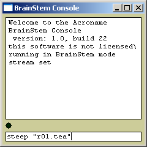
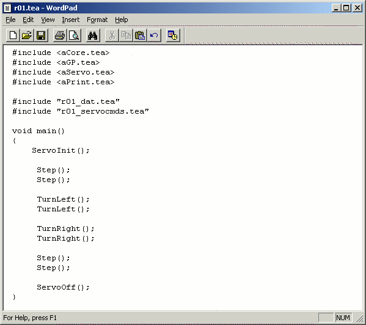
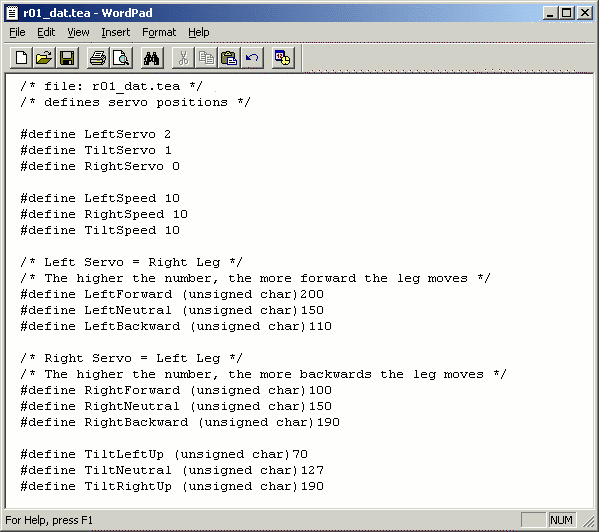
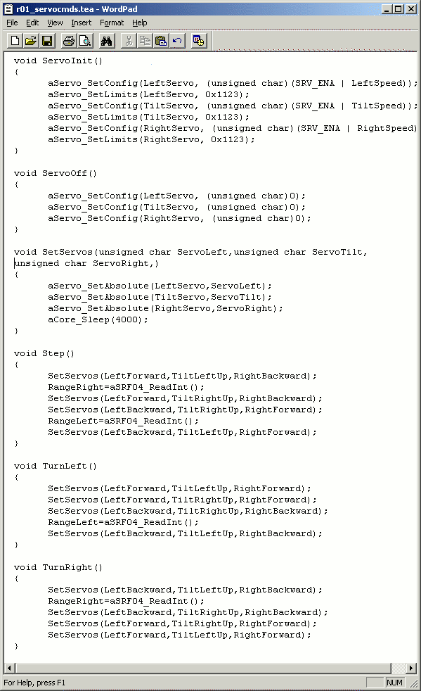

Controller Programming
Using the Brainstem GP1.0 controller
This section explains the usage of the Acroname Brainstem GP1.0: how programs are written, compiled, and loaded into the robot controller.
Writing TEA programs
To start of, the programs which run in Acroname's Brainstem controller are written in the "TEA" language which syntax is very similar to the C programming language. Any text editor can be used to edit the code. The code is saved as a ".tea" file, but needs to be compiled in order for the brainstem controller to understand the code.
Figure 1: Compiling a TEA program using the console.
Compiling TEA programs to CUP code
Compilation is done via Acroname's console, which is
downloadable at the companies website. The console is available
for Win32, MacOS X, and Linux. After downloading and installing
this software, the console can be found in the aBinary
directory on your computer as console.exe.
The TEA code which is used to control the robot has to be saved
in the aUser directory. The code which is written for Pivot is
saved as r01.tea in this directory. Compiling is done by
starting the console, and giving the command steep
"r01.tea", see Figure 1. After succesfull
compilation, this creates a r01.cup file in the aObjects
directory.
Downloading CUP code to the Brainstem controller
Once the TEA program is compiled into a .cup file, the program can be downloaded via the RS232 interface of the Brainstem. This is done by connecting the Brainstem controller via the serial interface convertor and RS232 cable to the host computer. With the robot powered up with batteries, the console indicates via a green blinking status indicator that the Brainstem is connected to your computer and console program. After the command load "r01.cup" 2 0 is given to download the code to the Brainstem, the command launch 2 0 starts executed the program on the controller. Note that the 2 stands for the module number, which defaults to 2 for the Brainstem controller. In case several Brainstem modules are connected, the next Brainstam module has number 4. The 0 stands for the slot number in which the code is loaded, which can be any slot ranging from 0 to 10.
Robot Programming
Below is the basic TEA code for the robot to make some
steps, and to let it turn. The program does not have the
capability to use the SRF04 range finder yet, and consequently
also no obstacle avoidance capability. The basic code is used
to experiment with the walking routines and to calibrate the
robot. To give an indication of the size of the program, it
compiles into 333 bytes.
The code is devided into three separate parts:
- r01.tea: This file contains the main program loop where the commands are given to move the robot around. The file also contains the include code for generic tea code (ACore.tea, aGP.tea, AServo.tea and aPrint.tea), which is supplied by Acroname, and the two custom parts which has to be written by the user.
- r01_dat.tea: This file can be considered the configuration file for the robot. Several parts can be identified in following order: definition of which servo is connected to which digital I/O, definition of the servo speeds, and definition of the three leg positions. The last definition can be considered as the calibration data of the legs.
- r01_servocmds.tea: In this file the servo commands to control the servos are defined. There are 6 commands defined. The first two procedures switch the servos on and off. The third procedure is the actual command to set the three servos of the robot to a specific position. The next three commands call this procedure several times to have the robot perform one step.
r01.tea:

r01_dat.tea:

r01_servocmds.tea:
